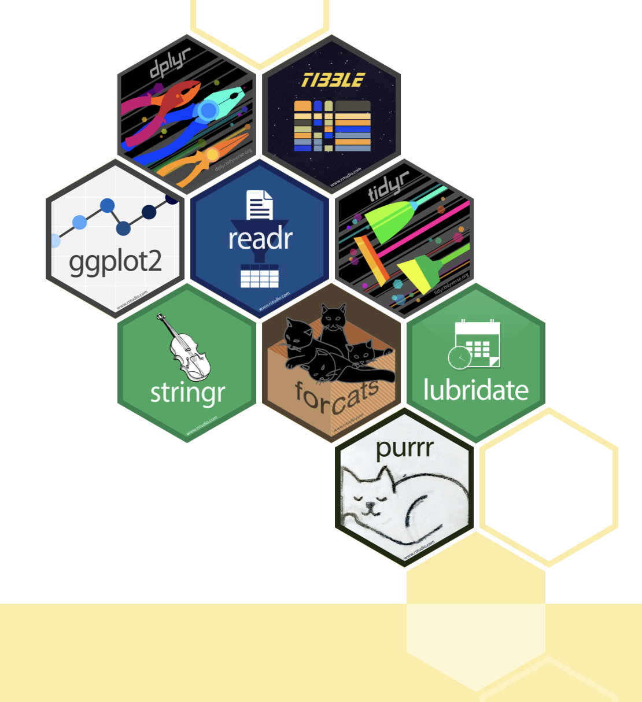

The Data Analysis Workflow

Source: @Wickham2023data, @Poldrack2023Statistical
The process of statistical modeling
There is a set of steps that we generally go through when we want to use our statistical model to test a scientific hypothesis:
- Specify your question of interest
- Identify or collect the appropriate data
- Prepare the data for analysis
- Determine the appropriate model
- Fit the model to the data
- Criticize the model to make sure it fits properly
- Test hypothesis and quantify effect size
- Communicate your analysis
Data Analysis Workflow
Import
Throughout, we have been using the tidyverse library of packages for data analysis.
The tidyverse is an opinionated collection of R packages designed for data science. All packages share an underlying design philosophy, grammar, and data structures.

Import
- There are tools for reading data from almost any source:
-
read_csv(),read_excel(),read_rds(), …
-
- When we load a dataset with a
tidyverse()function, it will return atibble
Code
data <- read_csv("data/Apple_Emissions/greenhouse_gas_emissions.csv")Tidy
The same data can be represented in multiple ways. Here’s the same data organized three different ways:
Each dataset shows the same values of four variables: country, year, population, and number of documented cases of TB (tuberculosis), but each dataset organizes the values in a different way.
Code
table1# A tibble: 6 × 4
country year cases population
<chr> <dbl> <dbl> <dbl>
1 Afghanistan 1999 745 19987071
2 Afghanistan 2000 2666 20595360
3 Brazil 1999 37737 172006362
4 Brazil 2000 80488 174504898
5 China 1999 212258 1272915272
6 China 2000 213766 1280428583Code
table3# A tibble: 6 × 3
country year rate
<chr> <dbl> <chr>
1 Afghanistan 1999 745/19987071
2 Afghanistan 2000 2666/20595360
3 Brazil 1999 37737/172006362
4 Brazil 2000 80488/174504898
5 China 1999 212258/1272915272
6 China 2000 213766/1280428583Code
table2# A tibble: 12 × 4
country year type count
<chr> <dbl> <chr> <dbl>
1 Afghanistan 1999 cases 745
2 Afghanistan 1999 population 19987071
3 Afghanistan 2000 cases 2666
4 Afghanistan 2000 population 20595360
5 Brazil 1999 cases 37737
6 Brazil 1999 population 172006362
7 Brazil 2000 cases 80488
8 Brazil 2000 population 174504898
9 China 1999 cases 212258
10 China 1999 population 1272915272
11 China 2000 cases 213766
12 China 2000 population 1280428583- There are three rules that make a dataset tidy:
- Each variable is a column; each column is a variable.
- Each observation is a row; each row is an observation.
- Each value is a cell; each cell is a single value.

Why ensure your data is tidy?
- There’s a general advantage to picking one consistent way of storing data. If you have a consistent data structure, it’s easier to learn the tools that work with it because they have an underlying uniformity.
- There’s a specific advantage to placing variables in columns because it allows R’s vectorized nature to shine. That makes transforming tidy data feel particularly natural.
So, our first task after importing the data is to make sure it’s tidy. In addition to the rules above, this can also include things like:
- ensure the data types are correct
- clean up the column names
- make sure we know what the variables represent
For the .csv data we loaded, our column names can be a bit difficult to work with since they have spaces in them. We can use a function from the janitor package to clean these:
Code
data <- data |>
janitor::clean_names()
data# A tibble: 127 × 6
fiscal_year category type scope description emissions
<dbl> <chr> <chr> <chr> <chr> <dbl>
1 2022 Corporate emissions Gross emissions Scope 1 Natural ga… 39700
2 2022 Corporate emissions Gross emissions Scope 1 Fleet vehi… 12600
3 2022 Corporate emissions Gross emissions Scope 1 Other (R&D… 2900
4 2022 Corporate emissions Gross emissions Scope … Electricity 0
5 2022 Corporate emissions Gross emissions Scope … Steam, hea… 3000
6 2022 Corporate emissions Gross emissions Scope 3 Business t… 113500
7 2022 Corporate emissions Gross emissions Scope 3 Employee c… 134200
8 2022 Corporate emissions Gross emissions Scope 3 Upstream f… 10600
9 2022 Corporate emissions Gross emissions Scope 3 Work from … 7500
10 2022 Corporate emissions Gross emissions Scope 3 Transmissi… 0
# ℹ 117 more rowsTransform
We’ve dealt with data transformations quite a bit already. This includes operations like calculating the mean for different groups, or for multiple groups:
Visualize
Communicate
This is where we will dive into using Quarto. Start by downloading the Apple Emissions dataset from Moodle and open RStudio.
We’ll go through how to create and write a full analysis in a .qmd file using this dataset.
Refer to our lecture notes specifically on using Quarto